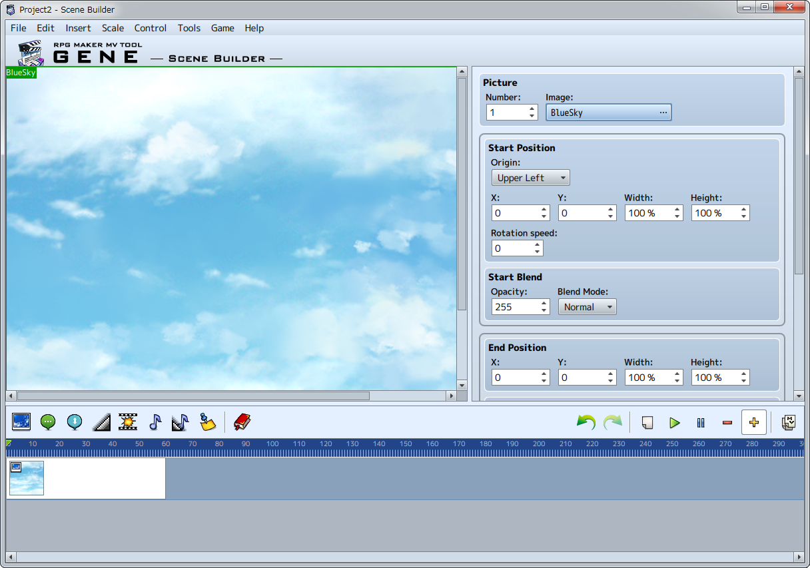

About Scene Builder
Scene builder is tool used to create and edit events for projects created by RPG Maker MV (hereafter MV).
* Primarily, you can create scenes displaying pictures and text. Not all events can be used.

Scene builder is tool used to create and edit events for projects created by RPG Maker MV (hereafter MV).
* Primarily, you can create scenes displaying pictures and text. Not all events can be used.